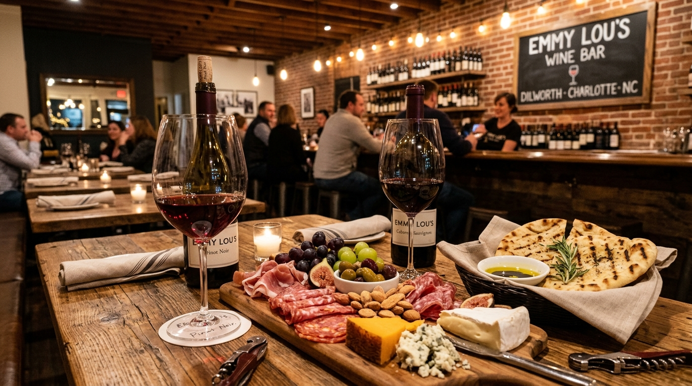

Sommelier Wine Curation
Hand-selected boutique wines by the glass or bottle, sparkling champagnes, crisp orange wines, & custom tasting flights.
Discover Wine Curation →Dilworth's premier neighborhood craft wine bar at 2400 Park Rd Suite H. Featuring curations of Old World & New World wines by the glass or bottle, artisanal charcuterie boards with imported prosciutto & aged gouda, truffle flatbreads, and candlelit patio seating.

Curated sommelier wines, artisanal charcuterie pairing, and candlelit Dilworth charm.
Hand-selected boutique wines by the glass or bottle, sparkling champagnes, crisp orange wines, & custom tasting flights.
Discover Wine Curation →Imported San Daniele prosciutto, spicy calabrese, aged Dutch gouda, French double cream brie, marcona almonds, & fresh fig jam.
Explore Pairing Craft →Warm grilled rosemary flatbreads, creamy burrata crostini, intimate candlelit tables, & dog-friendly outdoor patio lounge.
View Full Cellar Menu →